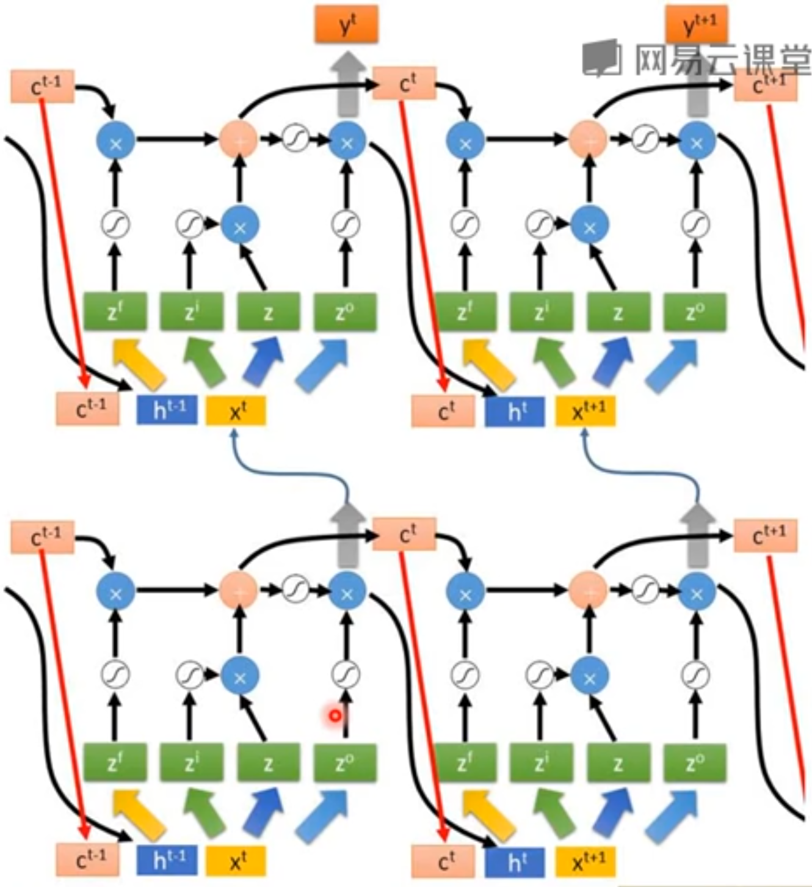

1. LSTM
[success]
问：长短期记忆单元到底是长期还是短期？
答：本质上的短期记忆。因为相比于普通RNN的memory（没有记忆功能，t时刻的值直接覆盖t-1时刻的memory）来说，它的记忆是长的。
long是short-term memory的形式词。
引入自循环的巧妙构思，以产生梯度长时间持续流动的路径是初始长短期记忆模型的核心贡献{cite?}。
[warning] 这句话读不通，把“以”改成“通过”貌似通顺一点。 [?]如何让梯度长时间持续流动？
其中一个关键扩展是使自循环的权重视上下文而定，而不是固定的{cite?}。
[success]
LSTM包含两种循环，分别是外环和内环（下文会介绍）。
外环是h->h，是RNN本来就有的概念。
内环是s->s，内环和s都是LSTM引入的概念。
“自循环的权重”是指s->s所用到的参数。
“上下文”是指RNN的输入。
“自循环的权重视上下文而定”是指s->s的参数不是固定的，而是x有关，这点从s的公式中也可以看出。
图中Memory Cell和Forget Gate之间的循环就是内环。
门控此自循环（由另一个隐藏单元控制）的权重，累积的时间尺度可以动态地改变。
[success] 问：为什么门控可以改动时间尺度？
答：门控可以决定（1）当前输入保留多少（2）历史信息保留多少
其作用类似10.9.2中的a，只是机制更加复杂。
调整（1）、（2）就是改变时间粒度的一个表现。
当前信息保留得多，相当于时间粒度调细。
历史信息保留得多，相当于时间粒度调粗。
在这种情况下，即使是具有固定参数的LSTM，累积的时间尺度也可以因输入序列而改变，因为时间常数是模型本身的输出。
[warning] 固定参数的LSTM? 时间常数是模型本身的输出?
LSTM已经在许多应用中取得重大成功，如无约束手写识别{cite?}、语音识别{cite?}、手写生成{cite?}、机器翻译{cite?}、为图像生成标题{cite?}和解析{cite?}。
[info] 图10.16 LSTM循环网络"细胞"的框图。 LSTM循环网络"细胞"的框图。 细胞彼此循环连接，代替一般循环网络中普通的隐藏单元。 这里使用常规的人工神经元计算输入特征。 如果sigmoid输入门允许，它的值可以累加到状态。 状态单元具有线性自循环，其权重由遗忘门控制。 细胞的输出可以被输出门关闭。 所有门控单元都具有sigmoid非线性，而输入单元可具有任意的压缩非线性。 状态单元也可以用作门控单元的额外输入。 黑色方块表示单个时间步的延迟。
LSTM块如图10.16所示。
在浅循环网络的架构下，相应的前向传播公式如下。
更深的架构也被成功应用{cite?}。
LSTM循环网络除了外部的RNN循环外，还具有内部的"LSTM细胞"循环（自环），因此LSTM不是简单地向输入和循环单元的仿射变换之后施加一个逐元素的非线性。
与普通的循环网络类似，每个单元有相同的输入和输出，但也有更多的参数和控制信息流动的门控单元系统。
最重要的组成部分是状态单元，与前一节讨论的渗漏单元有类似的线性自环。
然而，此处自环的权重（或相关联的时间常数）由遗忘门控制（时刻和细胞），由sigmoid单元将权重设置为0和1之间的值：
[success]
公式中的符号
图10.16下方有4个非线性变换。每个变换对应一组参数。
LSTM共需要4组参数，每一个都包含b、U、W.这意味着它需要的参数是普通unit的4倍。
公式中右上角有标记的是各种门的参数，没有标记的是输入的参数。
公式中，代表当前信息，代表历史信息。
各种门的作用
| Gate Name | 作用 | 1 | 0 |
|---|---|---|---|
| Input Gate | 输入是否能写入memory | 能写入 | 不能写入 |
| Output Gate | 是否将memory cell中的内容输入 | 能输出 | 不能输出 |
| Forget Gate | 是否保留当前memroy cell中的内容 | 保留 | 不保留 |
但Gate的值其实不是非0即1，而是(0,1)的值，由sigmoid函数获得，表示打开程度。
所有Gate的值都是network自己学到的，激活函数为sigmoid
其中是当前输入向量，是当前隐藏层向量，包含所有LSTM细胞的输出。 分别是遗忘门的偏置、输入权重和循环权重。 因此LSTM细胞内部状态以如下方式更新，其中有一个条件的自环权重：
[success]
s = 上一次的s 遗忘门 + 输入 输入门
[?] 为什么输入也要经过sigmoid变换？
其中分别是LSTM细胞中的偏置、输入权重和循环权重。
\textbf{外部输入门}(external input gate)单元以类似遗忘门（使用sigmoid获得一个0和1之间的值）的方式更新，但有自身的参数：
LSTM细胞的输出也可以由\textbf{输出门}(output gate)关闭（使用sigmoid单元作为门控）：
[success]
输出 = s * 输入门
其中分别是输出门的偏置、输入权重和循环权重。 在某些变体中，可以选择使用细胞状态作为额外的输入（及其权重），输入到第个单元的三个门，如\fig?所示。 这将需要三个额外的参数。
LSTM网络比简单的循环架构更易于学习长期依赖，先是用于测试长期依赖学习能力的人工数据集{cite?}，然后是在具有挑战性的序列处理任务上获得最先进的表现{cite?}。 LSTM的变体和替代也已经被研究和使用，这将在下文进行讨论。
[success]
t时刻的LSTM的计算过程
相邻两个时刻的LSTM联结到一起，图上的红线连接可以没有
深度的LSTM

2. Grid LSTM
普通LSTM只在时间方向上有Gate。
Grid LSTM在layer方向和时间方向都有Gate。
以上是2D LSTM
还可以有3D LSTM，用于影像生成。